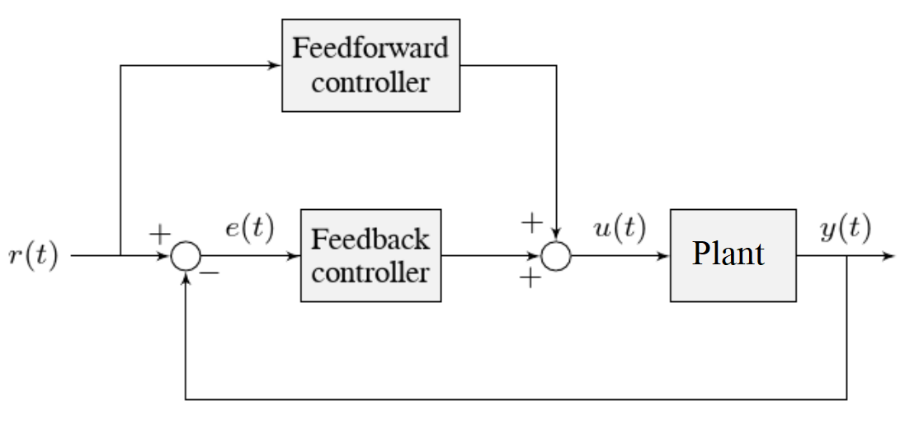

Tuning a Flywheel Velocity Controller
In this section, we will tune a simple velocity controller for a flywheel. The tuning principles explained here will also work for almost any velocity control scenario.
Flywheel Model Description
Our “Flywheel” consists of:
A rotating inertial mass which launches the game piece (the flywheel)
A motor (and possibly a gearbox) driving the mass.
For the purposes of this tutorial, this plant is modeled with the same equation used by WPILib’s SimpleMotorFeedforward, with additional adjustment for sensor delay and gearbox inefficiency. The simulation assumes the plant is controlled by feedforward and feedback controllers, composed in this fashion:
Where:
The plant’s output \(y(t)\) is the flywheel rotational velocity
The controller’s setpoint \(r(t)\) is the desired velocity of the flywheel
The controller’s control effort, \(u(t)\) is the voltage applied to the motor driving the flywheel’s motion
Note
A more detailed description of the mathematics of the system can be found here.
Picking the Control Strategy for a Flywheel Velocity Controller
In general: the more voltage that is applied to the motor, the faster the flywheel will spin. Once voltage is removed, friction and back-EMF oppose the motion and bring the flywheel to a stop.
Flywheels are commonly used to propel game pieces through the air, toward a target. In this simulation, a gamepiece is injected into the flywheel about halfway through the simulation. [1]
To consistently launch a gamepiece, a good first step is to make sure it is spinning at a particular speed before putting a gamepiece into it. Thus, we want to accurately control the velocity of our flywheel.
Note
This is fundamentally different from the vertical arm and turret controllers, which both control position.
The tutorials below will demonstrate the behavior of the system under bang-bang, pure feedforward, pure feedback (PID), and combined feedforward-feedback control strategies. Follow the instructions to learn how to manually tune these controllers, and expand the “tuning solution” to view an optimal model-based set of tuning parameters.
Bang-Bang Control
Interact with the simulation below to see how the flywheel system responds when controlled by a bang-bang controller.
The “Bang-Bang” controller is a simple controller which applies a binary (present/not-present) force to a mechanism to try to get it closer to a setpoint. A more detailed description (and documentation for the corresponding WPILib implementation) can be found here.
There are no tuneable controller parameters for a bang-bang controller - you can only adjust the setpoint. This simplicty is a strength, and also a weakness.
Try adjusting the setpoint up and down. You should see that for almost all values, the output converges to be somewhat near the setpoint.
Common Issues with Bang-Bang Controllers
Note that the system behavior is not perfect, because of delays in the control loop. These can result from the nature of the sensors, measurement filters, loop iteration timers, or even delays in the control hardware itself. Collectively, these cause a cycle of “overshoot” and “undershoot”, as the output repeatedly goes above and below the setpoint. This oscillation is unavoidable with a bang-bang controller.
Typically, the steady-state oscillation of a bang-bang controller is small enough that it performs quite well in practice. However, rapid on/off cycling of the control effort can cause mechanical issues - the cycles of rapidly applying and removing forces can loosen bolts and joints, and put a lot of stress on gearboxes.
The abrupt changes in control effort can cause abrupt changes in current draw if the system’s inductance is too low. This may stress motor control hardware, and cause eventual damage or failure.
Finally, this technique only works for mechanisms that accelerate relatively slowly. A more in-depth discussion of the details can be found here.
Bang-bang control sacrifices a lot for simplicity and high performance (in the sense of fast convergence to the setpoint). To achieve “smoother” control, we need to consider a different control strategy.
Pure Feedforward Control
Interact with the simulation below to see how the flywheel system responds when controlled only by a feedforward controller.
To tune the feedforward controller, increase the velocity feedforward gain \(K_v\) until the flywheel approaches the correct setpoint over time. If the flywheel overshoots, reduce \(K_v\).
Tuning solution
The exact gain used by the simulation is \(K_v = 0.0075\).
We can see that a pure feedforward control strategy works reasonably well for flywheel velocity control. As we mentioned earlier, this is why it’s possible to control most motors “directly” with joysticks, without any explicit “control loop” at all. However, we can still do better - the pure feedforward strategy cannot reject disturbances, and so takes a while to recover after the ball is introduced. Additionally, the motor may not perfectly obey the feedforward equation (even after accounting for vibration/noise). To account for these, we need a feedback controller.
Pure Feedback Control
Interact with the simulation below to see how the flywheel system responds when controlled by only a feedback (PID) controller.
Perform the following:
Set \(K_p\), \(K_i\), \(K_d\), and \(K_v\) to zero.
Increase \(K_p\) until the output starts to oscillate around the setpoint, then decrease it until the oscillations stop.
In some cases, increase \(K_i\) if output gets “stuck” before converging to the setpoint.
Note
PID-only control is not a very good control scheme for flywheel velocity! Do not be surprised if/when the simulation below does not behave well, even when the “optimal” constants are used.
Tuning solution
In this particular example, for a setpoint of 300, values of \(K_p = 0.1\), \(K_i = 0.0\), and \(K_d = 0.0\) will produce somewhat reasonable results. Since this control strategy is not very good, it will not work well for all setpoints. You can attempt to improve this behavior by incorporating some \(K_i\), but it is very difficult to achieve good behavior across a wide range of setpoints.
Issues with Feedback Control Alone
Because a non-zero amount of control effort is required to keep the flywheel spinning, even when the output and setpoint are equal, this feedback-only strategy is flawed. In order to optimally control a flywheel, a combined feedforward-feedback strategy is needed.
Combined Feedforward and Feedback Control
Interact with the simulation below to see how the flywheel system responds under simultaneous feedforward and feedback (PID) control.
Tuning the combined flywheel controller is simple - we first tune the feedforward controller following the same procedure as in the feedforward-only section, and then we tune the PID controller following the same procedure as in the feedback-only section. Notice that PID portion of the controller is much easier to tune “on top of” an accurate feedforward.
Tuning solution
In this particular example, for a setpoint of 300, values of \(K_v = 0.0075\) and \(K_p = 0.1\) will produce very good results across all setpoints. Small changes to \(K_p\) will change the controller behavior to be more or less aggressive - the optimal choice depends on your problem constraints.
Note that the combined feedforward-feedback controller works well across all setpoints, and recovers very quickly after the external disturbance of the ball contacting the flywheel.
Tuning Conclusions
Applicability of Velocity Control
A gamepiece-launching flywheel is one of the most visible applications of velocity control. It is also applicable to drivetrain control - following a pre-defined path in autonomous involves controlling the velocity of the wheels with precision, under a variety of different loads.
Choice of Control Strategies
Because we are controlling velocity, we can achieve fairly good performance with a pure feedforward controller. This is because a permanent-magnet DC motor’s steady-state velocity is roughly proportional to the voltage applied, and is the reason that you can drive your robot around with joysticks without appearing to use any control loop at all - in that case, you are implicitly using a proportional feedforward model.
Because we must apply a constant control voltage to the motor to maintain a velocity at the setpoint, we cannot successfully use a pure feedback (PID) controller (whose output typically disappears when you reach the setpoint) - in order to effectively control velocity, a feedback controller must be combined with a feedforward controller.
Bang-bang control can be combined with feedforward control much in the way PID control can - for the sake of brevity we do not include a combined feedforward-bang-bang simulation.
Tuning with only feedback can produce reasonable results in cases where no control effort is required to keep the output at the setpoint. This may work for mechanisms like turrets, or swerve drive steering. However, as seen above, it does not work well for a flywheel, where the back-EMF and friction both act to slow the motor even when it is sustaining motion at the setpoint. To control this system, we need to combine the PID controller with a feedforward controller.
\(K_d\) is not useful for velocity control with a constant setpoint - it is only necessary when the setpoint is changing.
Adding an integral gain to the controller is often a sub-optimal way to eliminate steady-state error - you can see how sloppy and “laggy” it is in the simulation above! As we will see soon, a better approach is to combine the PID controller with a feedforward controller.
Velocity and Position Control
Velocity control also differs from position control in the effect of inertia - in a position controller, inertia tends to cause the mechanism to swing past the setpoint even if the control voltage drops to zero near the setpoint. This makes aggressive control strategies infeasible, as they end up wasting lots of energy fighting self-induced oscillations. In a velocity controller, however, the effect is different - the rotor shaft stops accelerating as soon as you stop applying a control voltage (in fact, it will slow down due to friction and back-EMF), so such overshoots are rare (in fact, overshoot typically occurs in velocity controllers only as a result of loop delay). This enables the use of an extremely simple, extremely aggressive control strategy called bang-bang control.
Feedforward Simplifications
For the sake of simplicity, the simulations above omit the \(K_s\) term from the WPILib SimpleMotorFeedforward equation. On actual mechanisms, however, this can be important - especially if there’s a lot of friction in the mechanism gearing. A flywheel with a lot of static friction will not have a linear control voltage-velocity relationship unless the feedforward controller includes a \(K_s\) term to cancel it out.
To measure \(K_s\) manually, slowly increase the voltage to the mechanism until it starts to move. The value of \(K_s\) is the largest voltage applied before the mechanism begins to move.
Additionally, there is no need for a \(K_a\) term in the feedforward for velocity control unless the setpoint is changing - for a flywheel, this is not a concern, and so the gain is omitted here.